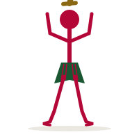
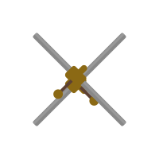
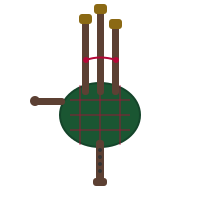

Every April, the rolling pastures of Rural Hill — a 265-acre historic farm just minutes from downtown Davidson — transform into a vibrant celebration of Scottish and Celtic culture. The Loch Norman Highland Games, named for nearby Lake Norman (whose name itself echoes Scottish heritage), is one of the premier Highland Games gatherings in the southeastern United States.
First held in 1994, the games draw thousands of visitors each year for a weekend of athletic feats, Highland dancing, pipe band competitions, Celtic music, and clan gatherings. The event honors the deep Scots-Irish roots of the Carolina Piedmont, where generations of Scottish and Scotch-Irish immigrants settled in the 18th century.
Athletic Events

The heavy athletics are the heart of any Highland Games. Competitors — men and women alike — test their strength, technique, and endurance across a series of traditional Scottish field events. Athletes often compete in kilts, connecting the modern sport to centuries of tradition.
Caber Toss
The most iconic Highland event. Athletes lift a tapered wooden pole (the caber), typically 19 feet long and 175 pounds, balancing it vertically before running forward and flipping it end over end. The goal is not distance but accuracy — a perfect throw lands at the 12 o'clock position relative to the thrower.
Stone Put
Similar to the modern shot put but using a river stone weighing 16 to 26 pounds. There are two styles: the Braemar stone (thrown from a standing position with no approach) and the Open stone (which allows a short run-up). Distances of 35 to 45 feet are common among top competitors.
Scottish Hammer Throw
A round metal ball attached to a rigid handle (not a chain, as in the Olympic version) is swung around the head and released for distance. The athlete's feet must remain planted, making core strength and rotational power crucial. The hammer weighs 16 or 22 pounds.
Weight for Distance
A 28- or 56-pound iron weight with a handle is thrown one-handed for maximum distance. Athletes spin before releasing, generating momentum. Top throwers routinely surpass 80 feet with the lighter weight.
Weight Over Bar
A 56-pound weight is thrown one-handed over a horizontal bar, with the height raised after each round. Competitors are eliminated as the bar goes higher, creating dramatic head-to-head showdowns. Records exceed 17 feet.
Sheaf Toss
Using a pitchfork, athletes launch a burlap bag stuffed with straw (weighing 16 or 20 pounds) over a raised bar. This event traces its origins to farm work and tests explosive upward power. The bar can reach heights of over 30 feet.
Highland Dancing
Highland dancing is a competitive solo dance form that combines athletic precision with grace. Dancers are judged on technique, timing, and artistry, performing to the music of a lone bagpiper. Competitions at Loch Norman draw dancers of all ages, from young beginners to seasoned champions.
Highland Fling
Believed to have originated as a warrior's victory dance performed on a small round shield (targe), the Highland Fling is danced in one spot. It demands precise footwork, high arm positions, and stamina across four steps.
Sword Dance (Ghillie Callum)
Dancers perform intricate steps over and around two crossed swords laid on the ground. Legend holds that touching the blades foretold bad luck in battle. Today it is a test of precision, agility, and nerve.
Seànn Triubhas
Pronounced "shawn trews," this dance tells the story of a Highlander shedding the restrictive trousers (trews) imposed after the 1746 ban on kilts, and joyfully returning to the freedom of the kilt in the final steps.
Reel of Tulloch
A lively dance said to have originated when parishioners stamped their feet and swung their arms to keep warm while waiting for their minister on a cold morning. It is energetic, fast-paced, and crowd-pleasing.

Celtic Music & Clan Gatherings

The sound of bagpipes fills the air throughout the weekend. Pipe and drum bands from across the region compete in massed band performances, individual piping, and drumming contests. The massed bands marching together across the field is one of the most stirring spectacles at any Highland Games.
Celtic folk musicians perform on stages throughout the grounds, playing traditional and contemporary songs on fiddle, harp, bodhran, tin whistle, and guitar. Visitors can enjoy everything from ancient ballads to lively Celtic rock.
Clan Tents & Heritage
Dozens of Scottish clan societies set up tents where visitors can explore their family heritage, learn about their tartan, and connect with distant kin. Whether your surname is MacDonald, Campbell, Stewart, or Davidson, there is likely a clan tent waiting to welcome you. Many visitors discover surprising connections to Scotland's storied past.
Scottish Vendors & Food
Browse vendors selling kilts, tartans, jewelry, swords, and Celtic artwork. When hunger strikes, try traditional fare: meat pies, bridies (savory pastry pockets), fish and chips, Scotch eggs, and shortbread. Wash it all down with Scottish ale or a dram of single malt whisky from the tasting tent.
Visiting the Games
Location
Rural Hill, 4431 Neck Road, Huntersville, NC 28078 — about 10 minutes from downtown Davidson.
When
Typically held on the third or fourth weekend of April. Friday evening features a torchlight ceremony and tattoo; Saturday is the main event day.
What to Bring
Lawn chairs, sunscreen, and comfortable shoes. The grounds are open fields, so dress for the weather. Kilts and tartans are enthusiastically welcomed.
For Families
Children's games, sheep herding demonstrations, and Highland cattle exhibits make the event fun for all ages. Young athletes can try kid-friendly versions of the heavy events.
Scottish Roots in the Carolina Piedmont
The Highland Games tradition connects to a real local history. In the mid-1700s, waves of Scottish Highlanders and Scotch-Irish settlers arrived in the Carolina backcountry, drawn by inexpensive land and religious freedom. These immigrants established the Presbyterian churches and farming communities that would eventually give rise to Davidson College and the town of Davidson itself.
The name "Loch Norman" playfully links Lake Norman to this Scottish heritage. Rural Hill, where the games are held, was itself a colonial-era plantation established by Major John Davidson in 1760. Today, the Highland Games are both a celebration of culture and a reminder that the Scottish thread is woven deeply into the fabric of this corner of North Carolina.